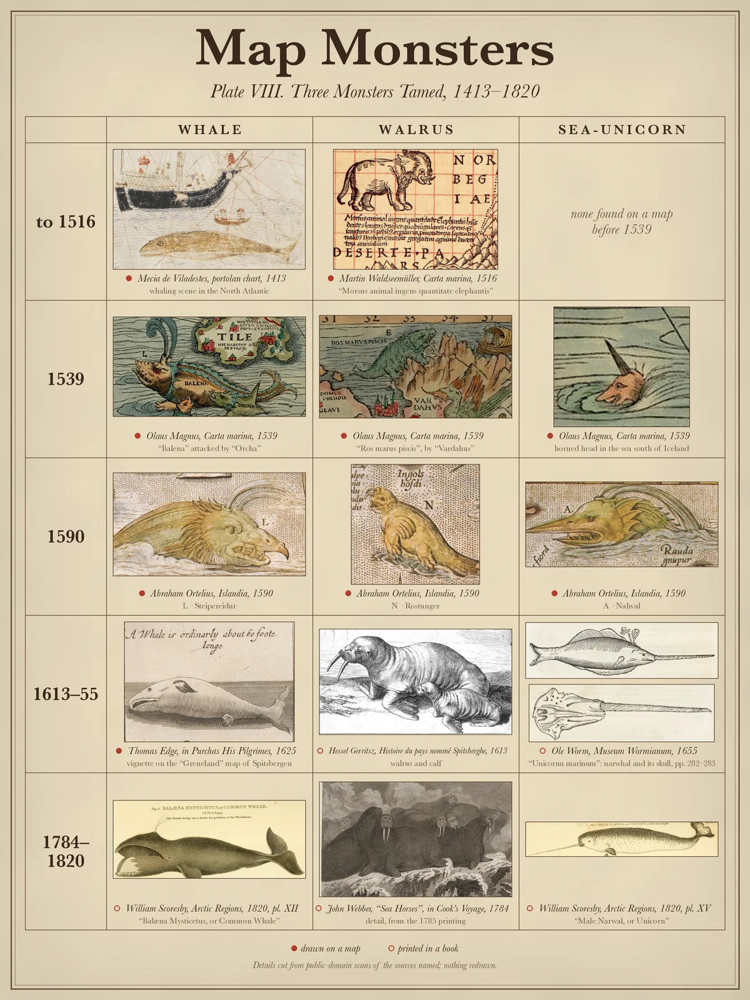
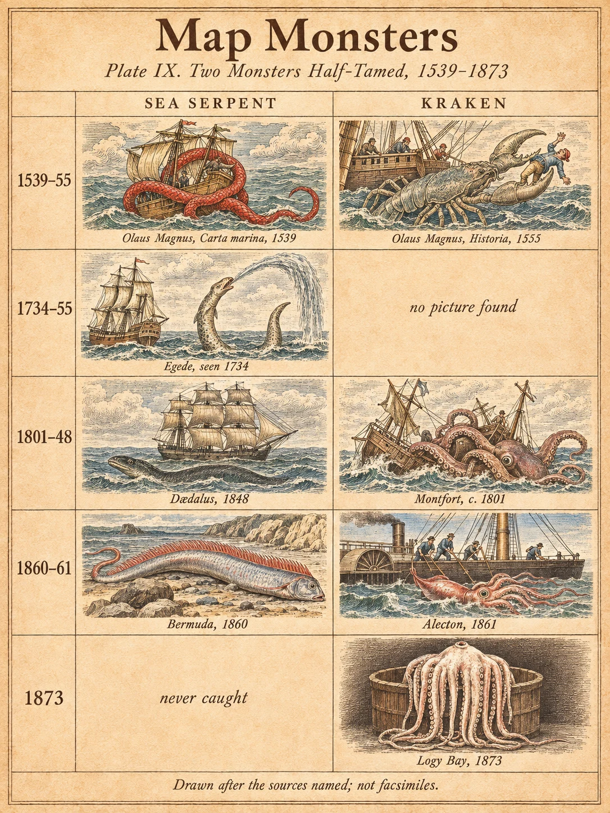
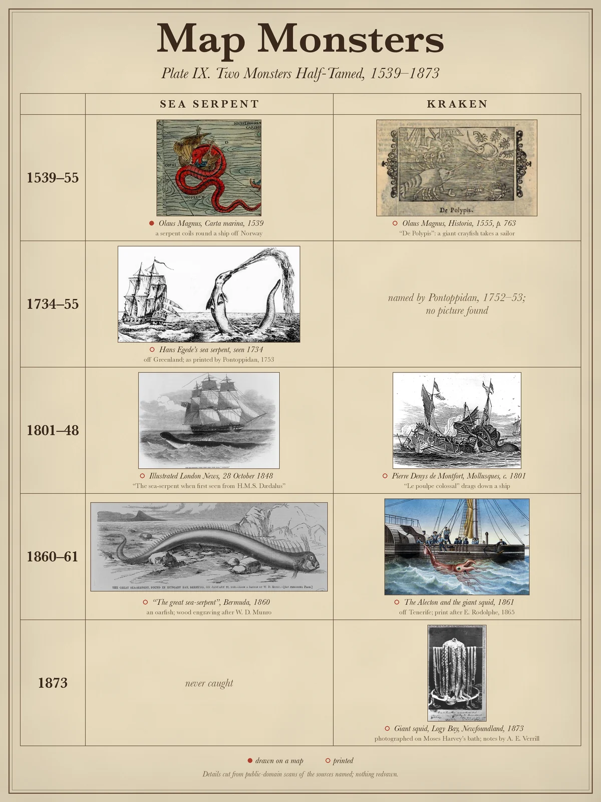
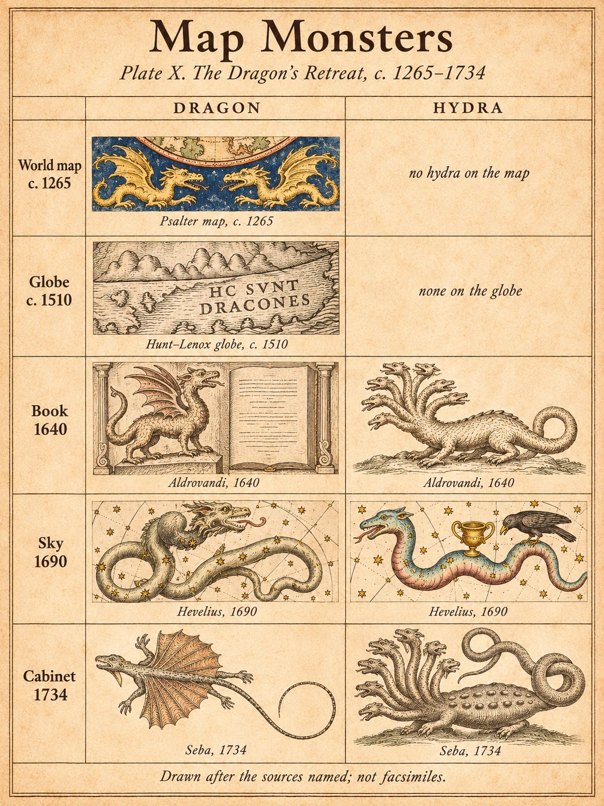
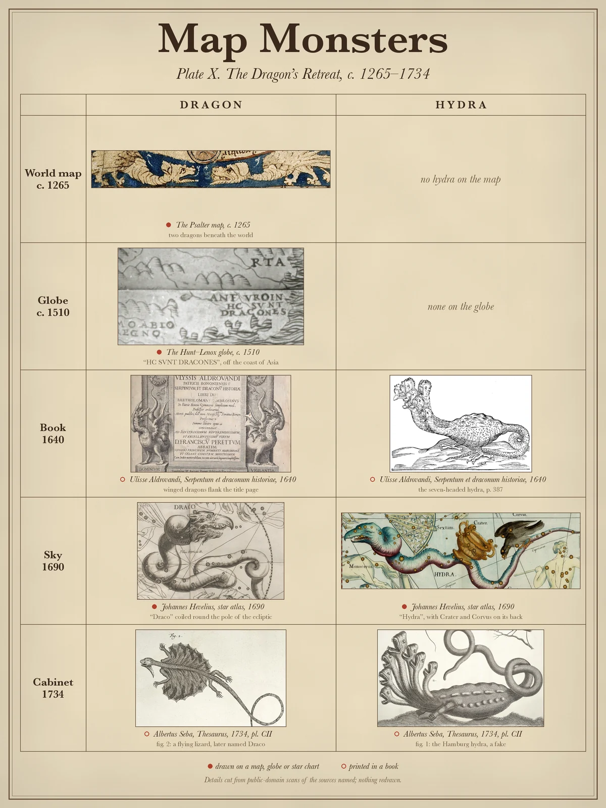

Three plates · 1265–1873
Map Monsters
What the old mapmakers drew in the sea and at the edges, and what became of it. Some monsters settled into real animals, some half did, and the dragons fled to the sky. Each plate can be seen two ways: redrawn, or cut straight from the maps and books.

Redrawn, not copied. An image model drew this plate after the sources named in its captions. It follows their spirit, not their lines: the Ortelius walrus and narwhal, for example, look nothing like this on the real map. The Monstrousness spindle is an invention. Switch to From the sources to see the originals.

Nothing redrawn. Every picture is a detail cut from a public-domain scan of the source named under it. A filled dot means it was drawn on a map; a ring means it was printed. Open the plate for the full-size version.

Redrawn, not copied. An image model drew this plate after the sources named in its captions; it tidies and colours them. Switch to From the sources to see the originals.

Nothing redrawn. The kraken ends in a photograph: the giant squid was named in 1857 and caught on film in 1873. The sea serpent never got one; the 1860 Bermuda “serpent” was an oarfish.

Redrawn, not copied. An image model drew this plate after the sources named in its captions. On the real Psalter map the dragons are pale gold on blue and far rougher. Switch to From the sources to see the originals.

Nothing redrawn. “Here be dragons” is close to a myth: the Latin phrase is known from globes, not flat maps, and the Hunt–Lenox globe is one of them. Dragons survive on maps today only in the sky, as Draco and Hydra.
The sources
Plate VIII · Three monsters tamed
- Mecia de Viladestes, portolan chart, 1413. A whaling scene in the North Atlantic. Scan ↗
- Martin Waldseemüller, Carta marina, 1516. The walrus as an elephant: “Morsus animal ingens quantitate elephantis”. Library of Congress scan ↗
- Olaus Magnus, Carta marina, 1539. The “Balena” attacked by an “Orcha”, the “Ros marus piscis” by Vardahus, a horned head south of Iceland, and the sea serpent of Plate IX. Scan ↗
- Abraham Ortelius, Islandia, 1590. L, Steipereidur; N, Rostunger; A, Nahval. Scan of a 1983 facsimile ↗
- Hessel Gerritsz, Histoire du pays nommé Spitsberghe, 1613. Walrus and calf. Scan ↗
- Thomas Edge, “Greneland”, in Purchas His Pilgrimes, 1625. The whale vignette on the map’s border. Rijksmuseum scan ↗
- Ole Worm, Museum Wormianum, 1655. “Unicornu marinum”: the narwhal and its skull, pp. 282–283. Biodiversity Heritage Library ↗
- John Webber, “Sea Horses”, in Cook’s Voyage, 1784. Detail, from the 1785 printing. Scan ↗
- William Scoresby, An Account of the Arctic Regions, 1820. Plate XII, the common whale, and plate XV, the male narwhal. Internet Archive ↗ · Plate XV ↗


,_NG-1988-23.jpg){kind=link}
_(IA_dr_sea-horses-drawn-by-j-webber-engraved-by-e-scott-the-figures-by-j-hea-00884012).jpg){kind=link}
_(14778424544).jpg){kind=link}
Plate IX · Two monsters half-tamed
- Olaus Magnus, Historia de gentibus septentrionalibus, 1555, p. 763. “De Polypis”: Olaus drew his polypus as a giant crayfish. Scan ↗
- Hans Egede’s sea serpent, seen off Greenland in 1734. The woodcut as reprinted by Erik Pontoppidan, 1753. Scan ↗
- Pierre Denys de Montfort, Histoire naturelle des mollusques, c. 1801. “Le poulpe colossal”. Scan ↗
- The Illustrated London News, 28 October 1848, p. 264. “The sea-serpent when first seen from H.M.S. Dædalus”. Library of Congress scan ↗
- “The great sea-serpent, found in Hungary Bay, Bermuda, on January 22, 1860”. Wood engraving from a sketch by W. D. Munro; the animal is an oarfish. Library of Congress scan ↗
- The French corvette Alecton and a giant squid, 30 November 1861. Print after E. Rodolphe, 1865. Scan ↗
- Giant squid from Logy Bay, Newfoundland, November 1873. Photographed over Moses Harvey’s bath, with notes by A. E. Verrill. Scan ↗


_M(ajesty%27s)_S(hip)_DAEDALUS_LCCN2003680172.jpg){kind=link}


Plate X · The dragon’s retreat
- The Psalter world map, c. 1265. Two dragons beneath the world. Scan ↗
- The Hunt–Lenox globe, c. 1510. “HC SVNT DRACONES”, off the coast of Asia. New York Public Library photograph. Scan ↗
- Ulisse Aldrovandi, Serpentum et draconum historiae, 1640. The title page, and the seven-headed hydra on p. 387. Title page ↗ · p. 387 ↗
- Johannes Hevelius, star atlas (Firmamentum Sobiescianum), 1690. Draco and Hydra. Draco ↗ · Hydra ↗
- Albertus Seba, Thesaurus, vol. I, 1734, plate CII. Fig. 1, the Hamburg hydra; fig. 2, a flying lizard. Scan ↗


.jpg){kind=link}


Some cells are readings, not labels: the horned head on Olaus Magnus’s map carries no name, so calling it the sea-unicorn is ours. Empty cells mean we found no picture, not that none exists. All scans are public domain or CC0.